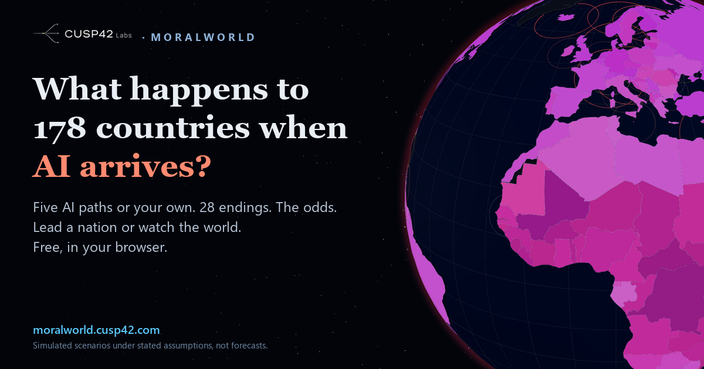

Driven by CARI
The Civilizational AI Risk Index scores AI risk across six dimensions: capability, diffusion, accident, control, governance gap and misuse. Choose one of five AI paths, or your own.
MoralWorld Live
MoralWorld is a simulation lab. It starts from today's world, measured country by country, takes an assumption about how AI develops, and computes quarter by quarter what follows: jobs, incomes, public finances, trust, unrest, institutions, and the chance of AI catastrophes. Free, in your browser, no account.

The Civilizational AI Risk Index scores AI risk across six dimensions: capability, diffusion, accident, control, governance gap and misuse. Choose one of five AI paths, or your own.
Ten stated mechanisms turn the AI path into country outcomes, from task-level automation and absorption limits to fiscal stress and social trust. Backtested on 2019-2024 and, for the society layer, 1996-2023.
One run is one draw of luck. The Odds view runs the same setup many times and shows how often each of 28 endings happens. Every result is a scenario under stated assumptions, not a forecast.
Govern one country: decisions arrive when its situation calls for them, and you are scored on prosperity, jobs, cohesion, fairness, freedom and the future.
A link reproduces the exact world. Posters in eleven languages carry the ending, the odds and the caveat, with a QR code to open the same world.
One set of rules for every country, change judged against each country's own start, no regime labels, and wars never name countries on posters.
Cite
If you use MoralWorld in research, teaching or writing, please cite it. Software: PolyForm Noncommercial 1.0.0; documents and posters: CC BY-NC 4.0.
CUSP42 Labs (2026). MoralWorld: a mechanism-based simulation of how AI propagates through
economies and societies (version 0.5). https://moralworld.cusp42.com
@software{cusp42_moralworld_2026,
author = {{CUSP42 Labs}},
title = {MoralWorld: a mechanism-based simulation of how AI propagates through economies and societies},
year = {2026},
version = {0.5},
url = {https://moralworld.cusp42.com}
}